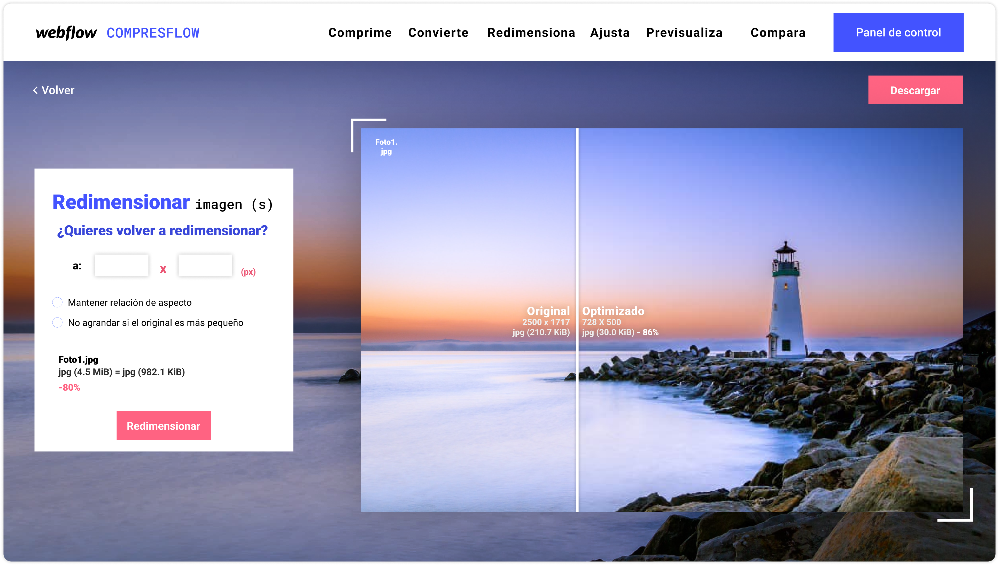
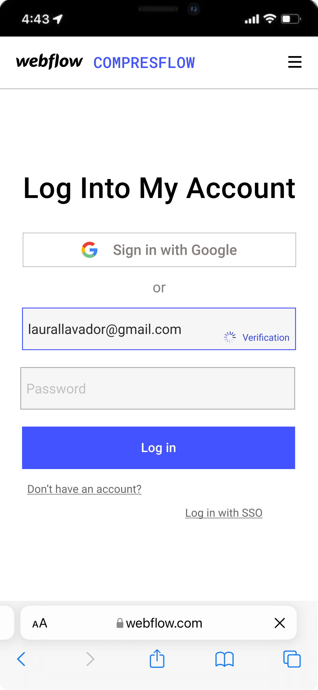
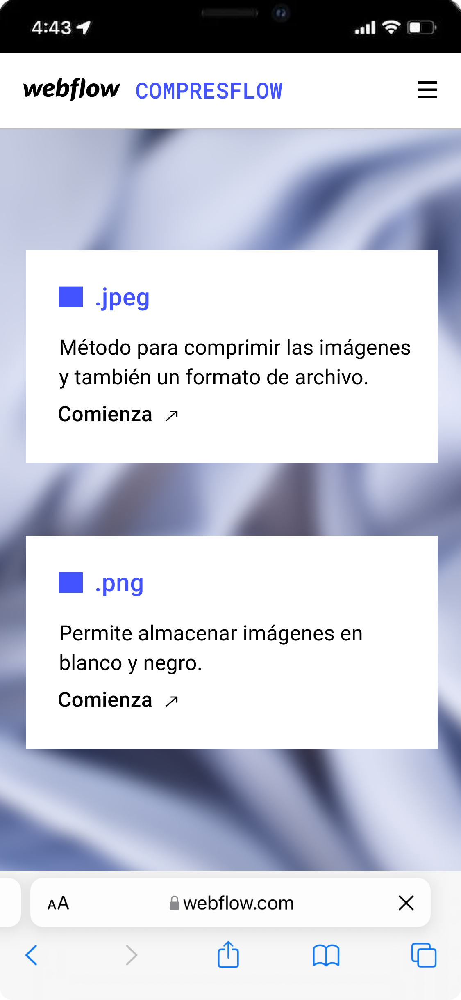
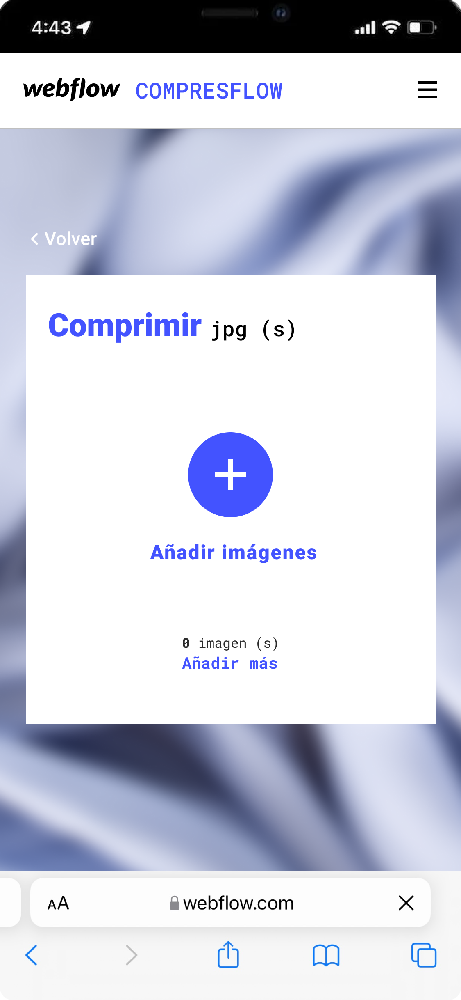
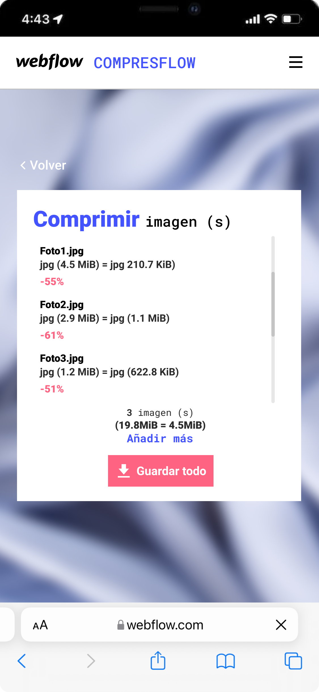
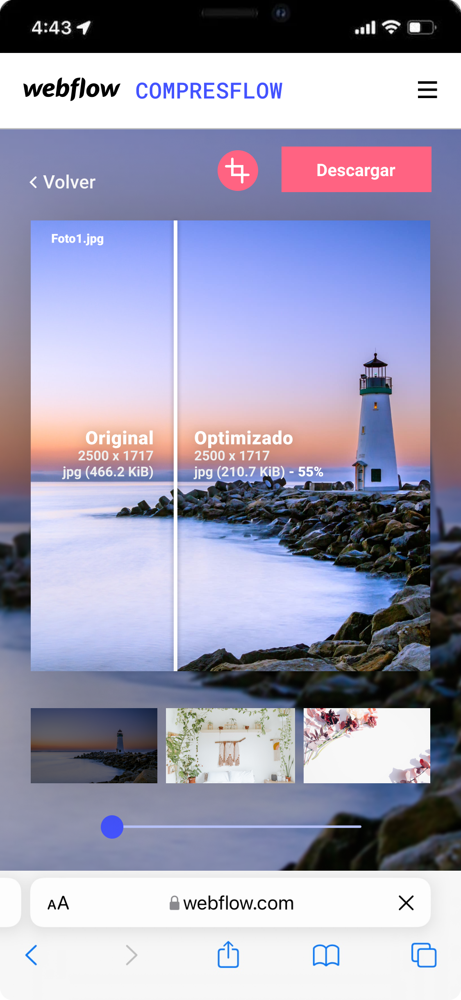
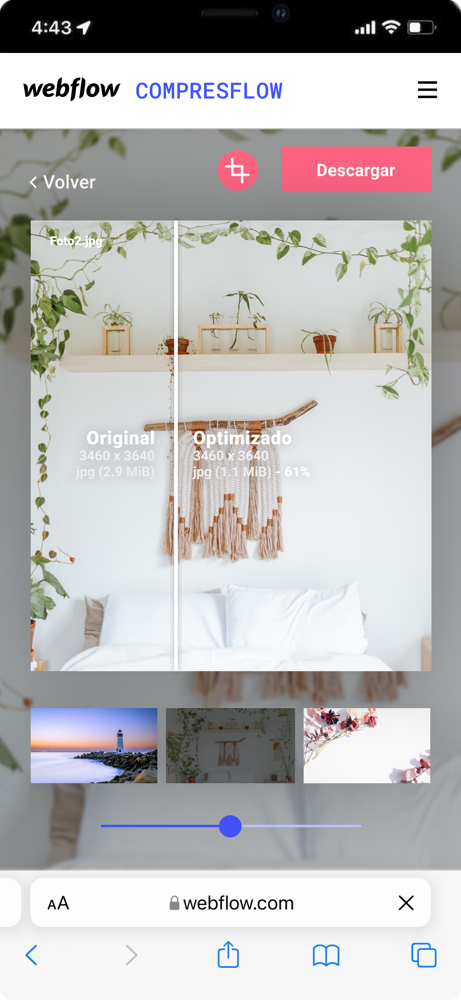
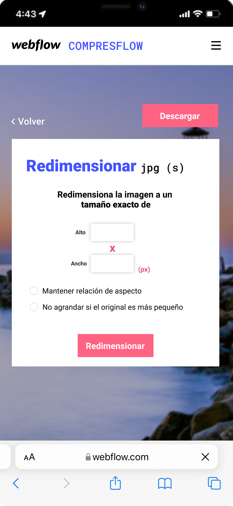
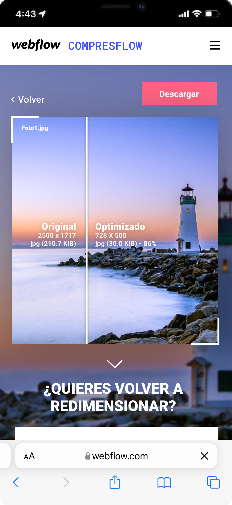

The problem.
Large images can slow Webflow sites. Optimizing each asset by hand adds repeated work and can lead to inconsistent results across devices.
Additional project / CompressFlow
CompressFlow brings image conversion, compression and resizing together. I designed a responsive workflow that helps Webflow users prepare images for the web while keeping control over quality and dimensions.

01 / Problem & solution
Large images can slow Webflow sites. Optimizing each asset by hand adds repeated work and can lead to inconsistent results across devices.
CompressFlow automates image conversion, compression and resizing in one workflow, with controls for format, dimensions and quality. The aim was to save preparation time and deliver smaller images ready for the web.
02 / Design process
I analyzed existing Webflow metrics and interviewed users to find where image preparation was slowing their work.
I used empathy maps and user journeys to map the path from choosing an image to preparing it for publication. Wireframes helped me explore where format, dimensions and quality controls should appear.
I built a design system and used it to create interactive, responsive prototypes in Figma.
I tested the prototype with users and iterated on the sequence based on what I observed. The validation methods included usability and A/B testing.
03 / Interaction design
The desktop design places the controls beside the image. A visual preview lets users see what their changes mean for the asset before they apply them. On mobile, the same actions are broken into focused screens for upload, settings and review.

04 / Final screens
The mobile flow breaks image preparation into individual decisions. Choose the format, add images, check compression results and compare the output before resizing or downloading.
Select an image to see the full-size screen.







